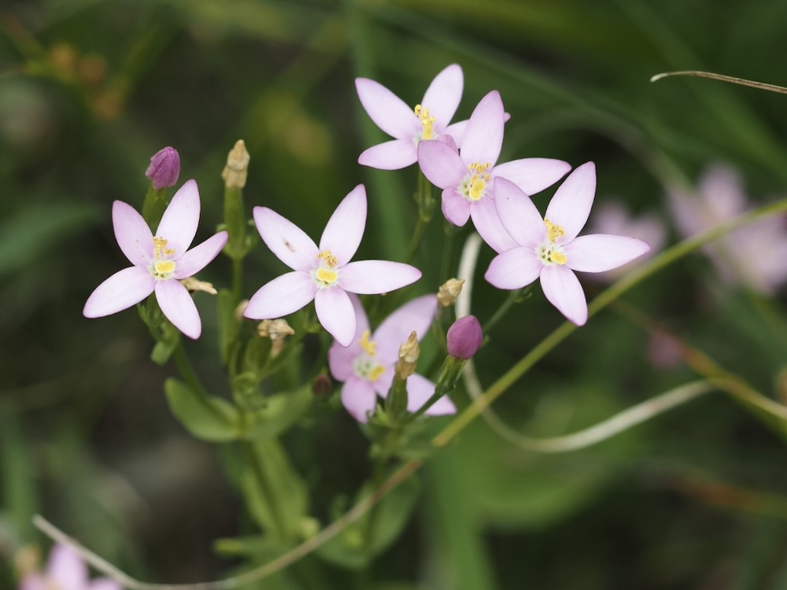
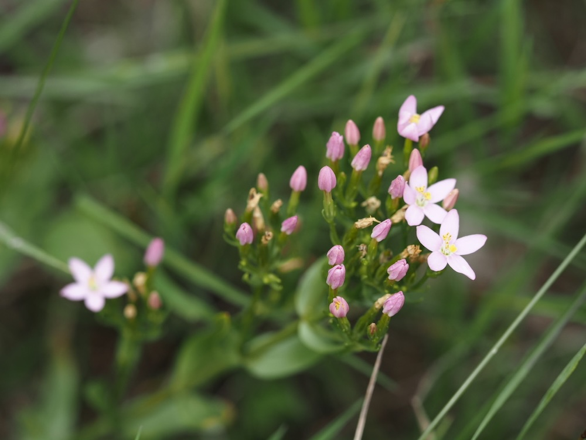

Klein, zart, kostbar — eine Heilpflanze mit langer Geschichte.



Tausend Gulden wert
Schon im Mittelalter galt das Tausendgüldenkraut als so wertvolle Heilpflanze, dass es „tausend Gulden" wert sei — daher der Name. Es enthält bittere Inhaltsstoffe, die noch heute als Magenmittel und Appetitanreger verwendet werden. Die rosa Sterne öffnen sich nur bei Sonnenschein und schließen sich an trüben Tagen — wie viele Enziangewächse.
Zweijähriger Lebenslauf
Im ersten Jahr bildet das Tausendgüldenkraut nur eine flache Rosette aus glatten, ovalen Blättern. Erst im zweiten Jahr schießt der dünne Blütenstängel in die Höhe, dann blüht die Pflanze, setzt Samen und stirbt ab. Diese Strategie ist typisch für viele kleine Magerwiesen-Arten — sie sammelt im ersten Jahr Energie und investiert sie im zweiten in die Fortpflanzung.
Wissenswertes & Merksätze
Erkennungszeichen
Zarter, nur 10–40 cm hoher Stängel. Blätter gegenständig, oval, glatt und unbehaart. Blütenkrone tief 5-teilig, leuchtend rosa, gelber Schlund.
Geschützte Art
In Deutschland steht Centaurium erythraea auf der Vorwarnliste der Roten Liste. Pflücken oder Ausgraben ist tabu — auch nicht zu Heilzwecken aus dem Garten der Natur.